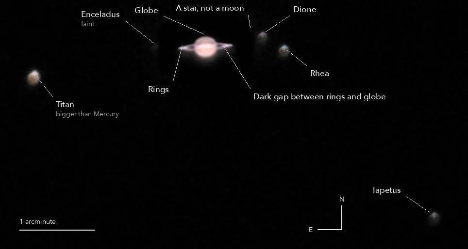

Saturn and five of its moons
The ringed planet, in Pisces
A planet ten times as far from the Sun as the Earth, with rings of ice wider than the planet itself. Two hours of short pictures around its highest point in the sky, and only the sharpest moments kept.
What you are looking at

Swipe sideways to see the rest. Tap the picture for full size.
- How far
- Saturn was 1,266 million km away; its light took 70 minutes to get here.
- How big
- The globe is about 120,000 km across, nine Earths side by side; the rings span about 270,000 km and are mostly less than a kilometre thick. Here the globe is 20 arcseconds wide, about 50 pixels.
- The moons
- Five of its moons, named from where JPL's orbits put them at that moment; each name sits on a point found in the picture. Titan, the largest, has a thick atmosphere. Tethys and Mimas were lost in the planet's glare, Hyperion was too faint.
- Honest note
- The air was soft that night. The rings, the dark gap inside them and the globe show; the Cassini division in the rings does not. The planet and the moons are shown at different brightness: the moons are hundreds to thousands of times fainter than the planet.
Photography notes
25 of 488 frames of 1/60 s for the planet, 2 frames of 2 s for the moons. The sharpest 25 of 488 short frames for the planet, two longer ones for the moons, set together at the sensor's own scale.
Equipment
- Telescope
- Celestron 8SE Schmidt-Cassegrain: 203 mm aperture, 2,084 mm focal length by plate solve, f/10.3
- Camera
- Sony a6000, stock, at prime focus: APS-C 23.5 x 15.6 mm, 6000 x 4000, 3.9 micron pixels, RAW
- Mount
- Sky-Watcher EQ6-R, unguided, not dithered
Acquisition
- Exposures
- 488 x 1/60 s at ISO 800 for the planet; 2 x 2 s at ISO 6400 for the moons, the two framing shots taken just before, in which the planet is blown out (960 times the exposure)
- Frames
- 488 taken for the planet, all usable, the sharpest 25 kept. No cloud: every frame's light within 7 percent of the median. Each frame graded by sharpness, its ring line measured to follow the field's turn. Moons: both frames
- When
- The night of 17 October 2026, from late in the evening to just after midnight, over two hours; 24 of the 25 kept frames from its first hour. About 50 degrees up
- Sampling
- 0.388 arcsec per pixel, the sensor's own scale, never enlarged: the planet is stacked on a grid 3 times finer for the arithmetic, then binned back
- Field
- 6.2 x 3.3 arcmin, north up and east left: both parts turned 120 degrees in one resampling each, at their own scale
- Calibration
- No darks or flats. Each frame's sky, one constant per colour plane, taken off. The two moon frames averaged, and where they disagree by more than 6 sigma the lower kept, so a hot pixel or a cosmic ray in one drops out (the field moved 4.6 arcmin across the sensor between them)
Processing
- Lucky imaging
- Plain stacks of the sharpest 5 up to all 488 compared on the polar limb, the ring's width and the gap between rings and globe: 8 to 25 frames sit on one plateau, more are softer, and 5 is sharper by the gap (0.145 against 0.127), so the rule chose 5. 25 were kept, because restored, 25 beat 5 (gap 0.359 against 0.313) with less than half the grain and Titan measured at 18 sigma instead of 8: the blur is known better
- Registration
- Each colour plane laid at its own place on a grid 3 times finer than the sensor (0.129 arcsec), no demosaic; the field's turn (0.026 degrees a minute) taken out; registered to 0.04 sensor px rms. The air's prism: red sat 0.31, 0.36 and blue -0.52, -0.54 sensor px from green, the same in each half of the frames, and were slid back onto it
- Planet stack
- The 25 frames each turned back to the moons' moment and laid down in one Lanczos resampling with their colour places and shift, then averaged; two half stacks (odd and even ranks) made the same way for the tests
- Restoration
- Blur measured on Titan in the same 25 frames: 3.20 x 2.97 arcsec (Titan's own disc, 0.8 arcsec, adds about 1 percent). Divided out with 24 rounds of Richardson-Lucy on brightness, each colour scaled alike. The rounds were set on a model Saturn blurred the same way with the stack's own grain: stopped before its false bright rim passes 2 percent of the globe
- Composite
- The planet set into the moon field where the 2 s frames are blown out, grown 28 px and feathered over 8. The planet's glare taken off the moon field ring by ring. Each part has its own white: the moons are lifted hundreds to thousands of times against the planet
- Finish
- Planet: white at its brightest 0.05 percent, gamma 1.25. Moons: an arcsinh stretch so Titan and Iapetus both show. Then the dark sky set neutral and to black at its own level (60th percentile), smoothed (bilateral 4 px), saturation x 1.15
- Picture size
- 964 x 514 pixels
- Software
- Capture and mount: Observatory (Elixir on a Raspberry Pi 3). Stacking: numpy, OpenCV, rawpy. Plate solving: astrometry.net. Stacked from the camera's RAW frames. Nothing generated.
What the picture shows
- Moon names
- Every point 6 sigma above the glare listed and matched to JPL Horizons for the frames' moment: Titan, Rhea, Dione, Iapetus and Enceladus each within 0.12 arcsec of its predicted place, 0.07 arcsec rms. The point beside Dione is the star Gaia DR3 2549423661270534784 (G 11.9), not a moon
- Not seen
- The Cassini division: at its place the light lies between ring B's and ring A's at both ends, in the plain stack, the restored one and each half alone, with no dip. Mimas (30 arcsec out) not found; Tethys (10 arcsec out) inside the blown-out patch; Hyperion too faint. Seven faint points (6 to 8 sigma) match no moon; one is a Gaia star, the others are not named
- Compared
- Not as sharp as 4 October: Titan's blur 3.2 x 3.0 arcsec against 2.7 x 2.2 then, and by the same measures the plain stack's gap contrast 0.13 against 0.32 and the ring's width 4.2 against 3.8 arcsec
Everything above as Markdown, ready to paste into a forum post.
© 2026 Brad Gessler · Celestron 8SE (8 inch, f/10.3) and Sony a6000 on an EQ6-R · San Francisco Bay Area · night of 17 October 2026
© 2026 Brad Gessler. The pictures and the words are his own; all rights reserved.